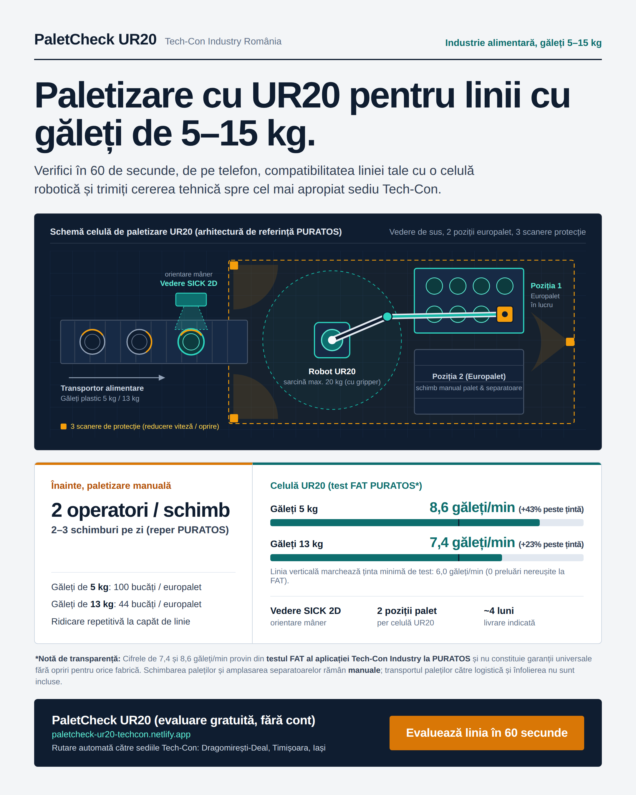

Paletizarea manuală a găleților de 5–15 kg blochează fabricile alimentare.
PaletCheck UR20 califică în 60 de secunde, de pe telefon, compatibilitatea liniei cu o celulă Tech-Con UR20 și rutează cererea spre cel mai apropiat sediu.
Ritm măsurat în testul FAT PURATOS (țintă ≥6/min, 0 erori)
~4 luni
Timp livrare celulă UR20 (comenzi an curent până în august)
Blocajul real din hală și din vânzări
Gălețile din plastic de 5 kg (100/europalet) și 13 kg (44/europalet) implică ridicare repetitivă pe 2–3 schimburi.
Directorii de producție amână decizia: nu știu rapid dacă găleata + gripperul ≤ 20 kg, dacă orientarea mânerului cere vedere SICK 2D și unde apare blocajul aval.
Inginerii Tech-Con pierd ore de ofertare pe cereri incomplete, fără parametri de linie.
Segment țintă (ICP) și lanț de decizie
Segment primar: fabrici alimentare din România (CAEN 10xx — panificație, lactate, sosuri, creme) în 2–3 schimburi.
Evaluator pe telefon: Director Producție, Plant Manager, Inginer Mentenanță.
Decident CapEx: Director General / CFO (130.000 EUR/celulă, scenariu concurs; alte industrii necesită validare separată).
02 / Soluția și Demo Live0:30 – 1:30 (Demo live 60s)
PaletCheck UR20: pre-evaluare tehnică pe telefon, fără cont.
Link live: https://paletcheck-ur20-techcon.netlify.app (date fictive .example, verifică atât cazul normal, cât și erorile)
Caz 1 — Flux normal (SC LactoSud Demo SRL)
Pas 1: Apasă Încarcă caz normal (Demo) (Ilfov, Lactate, găleată 13 kg + gripper 3 kg, 6,5 găleți/min, 44/palet).
Pas 2: Apasă Evaluează compatibilitatea UR20 pentru calcul sarcină, comparație FAT, ritm schimb palet și hub.
Pas 3: Apasă Generează cerere relevantă (CRM) → card cerere salvat local (deduplicat) + export .json.
Rezultat live: Compatibil pentru evaluare tehnică · 16 kg / 20 kg UR20 · 6,5 vs 7,4 găleți/min (reper FAT) · Schimb palet la ~6,8 min · Hub: Dragomirești-Deal
Caz 2 — Date lipsă, erori și limite reale
Pas 1: Apasă Testează date lipsă / erori apoi Evaluează compatibilitatea UR20.
Validare deterministă: blochează 3 erori inline — ritm lipsă, sarcină 21 kg > 20 kg UR20, bifa de schimb manual paleți/separatoare neconfirmată.
Scop onest: schimbarea paleților și separatoarele rămân manuale; transportul MiR, înfolierea și expedierea sunt explicit în afara scopului.
Rezultat live: Verdict «Eroare date» · KPI ascunse · Butonul «Generează cerere relevantă (CRM)» rămâne blocat până la corectare.
03 / Strategie, Promovare și Scalare Națională1:30 – 2:00
Buget 30.000 EUR concentrat 65% în S1, operat prin 3 hub-uri.
Pentru livrare în anul calendaristic (~4 luni/celulă), contractele trebuie semnate până la final de august.
Alocare 30.000 EUR și Funnel
Canale: Google Search 6.500 EUR, LinkedIn Ads 5.500 EUR, Studiu PURATOS 4.500 EUR, Direct CAEN 10xx 4.000 EUR, Webinare asociații 3.500 EUR, PWA/SEO 3.500 EUR, Rezervă 2.500 EUR.
Regulă stop la 45 zile: canal >400 EUR/cerere sau 0 cereri se taie cu 50%; clienți deduplicați.
Pas 1 (Q1 — 35% buget): Lansare PaletCheck + studiu PURATOS din Dragomirești-Deal și Timișoara (țintă: 40 cereri, 5 celule).
Pas 2 (Q2–Aug — 30% buget): Extindere Iași, 3 webinare ROMPAN/APRIL și realocare din rezerva de 2.500 EUR (cumulat: 17 celule contractate până în august).
Pas 3 (Q3–Q4): Livrare pe 3 hub-uri: Dragomirești-Deal 9, Timișoara 4, Iași 4 (capacitate 18 celule în fereastra de 8 luni).

Material promovare LinkedIn (1080×1350)
04 / Model Financiar (1 an calendaristic · EUR fără TVA)2:00 – 2:30
17 celule aduc 310.000 EUR înainte de regie; 20 celule cu buffer impozit.
Sursă unică: deliverables/02-finance/financial_model.xlsx (7 foi, 471 formule Excel live, 0 erori, fără totaluri scrise manual).
2.210.000 EUR
Venit anual (17 × 130.000 EUR)
310.000 EUR
Rezultat după promo (înainte de regie & impozit)
2 celule
Prag acoperire buget promovare (30.000 EUR)
20 celule
Țintă comercială cu buffer (+3 celule pt. impozit 16%)
Date lipsă din brief: regie vânzări, service/garanție, alte costuri fixe alocate și cota exactă de impozit.
Verificare impozit 16% (fără regie): la 17 celule → 260.400 EUR net; pentru 300.000 EUR net trebuie 357.143 EUR brut → 20 celule (310.800 EUR net).
Risc capacitate (94%): 17 livrări din 18 posibile în 8 luni → concentrarea bugetului în Q1–Q2 (65%) protejează termenul din august.
05 / Utilizarea Critică a AI și Concluzie2:30 – 3:00
AI ca accelerator, echipa ca filtru tehnic, financiar și vizual.
Flux multi-agent Kiro sincronizat pe un SSOT blocat, verificat cu teste automate, evaluator independent de formule și inspecție vizuală.
3 erori AI reale, prinse și corectate de echipă
Tech (app/): AI bloca evaluarea pe email gol (stricând demo-ul cu 3 erori) și desena etichete 3D sub palet → am separat validarea CRM și am mutat adnotările pe strat superior (91/91 teste Vitest).
Finance (Excel): formula S1 ≥ 65% dădea avertisment fals din virgulă mobilă (0,64999) și 310.000 EUR era etichetat „profit net” → fixat cu ROUND() și clarificat impactul impozitului de 16%.
Promo (poster): prima versiune era un template generic dark-mode → refăcut cu taste-skill într-o schemă tehnică UR20 cu brațul stratificat corect peste europalet.
De ce soluția este pregătită de pilot
Prototip mobil real: testabil în 30s pe caz normal și pe caz cu date lipsă/greșite, fără login.
Integritate tehnică: cifrele FAT PURATOS sunt separate de garanții; paleții și separatoarele rămân manual, MiR/înfolierea sunt excluse.
Excel transparent: celulele de input permit echipei Tech-Con să introducă regia reală și să recalculeze pragul instant.
https://paletcheck-ur20-techcon.netlify.app
Demo preîncărcat · Dragomirești-Deal, Timișoara, Iași